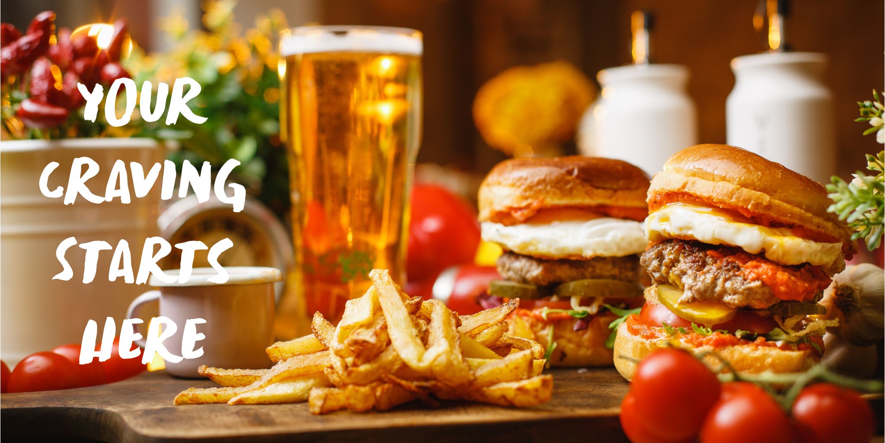
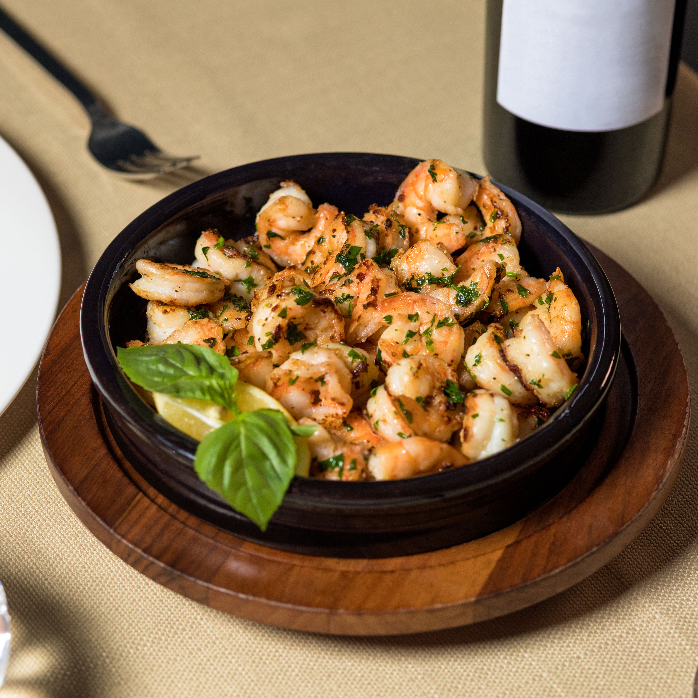

Welcome to B&M's, where every meal is crafted with passion and served with a smile.

Welcome to B&M's
Hungry already?
Explore our signature dishes and discover your new favorite right away!
B&M's Favourites
-
Classic Smash Burgers:
A juicy grilled lamb patty layered with melted cheddar cheese, crisp lettuce, fresh tomatoes, pickles, and our signature house sauce, served on a toasted brioche bun.

-
Grilled Chicken Burrito:
A warm flour tortilla packed with seasoned grilled chicken, Mexican rice, black beans, fresh salsa, cheddar cheese, and creamy chipotle sauce.

-
Margherita Pizza:
A stone-baked pizza topped with rich tomato sauce, fresh mozzarella, basil leaves, and a drizzle of extra virgin olive oil.

-
Butter Garlic Prawns:
Succulent prawns sautéed in rich garlic butter with fresh herbs, a touch of lemon, and cracked black pepper, served hot for a delicious seafood experience.

Why Choose Us?
-
Fresh Ingredients
We only use fresh, high-quality ingredients to ensure every dish is packed with flavor. -
Expertly Crafted
Our chefs are passionate about creating dishes that are both delicious and visually appealing. -
Fast & Friendly Service
Enjoy prompt service and a welcoming atmosphere every time you visit. -
Unforgettable Taste
From our signature burgers to fresh seafood, every bite is crafted to leave a lasting impression.
Customer Reviews
-
John D. ⭐️⭐️⭐️⭐️⭐️
"B&M's is my go-to spot for a quick and delicious meal. The burgers are always juicy and flavorful!"
-
Sarah K. ⭐️⭐️⭐️⭐️⭐️
"I love the variety on the menu. The grilled chicken burrito is my favorite!"
-
Mike L. ⭐️⭐️⭐️⭐️⭐️
"The seafood dishes are amazing. The butter garlic prawns are a must-try!"
-
Emily R. ⭐️⭐️⭐️⭐️⭐️
"Great atmosphere and friendly staff. I always leave satisfied and happy."